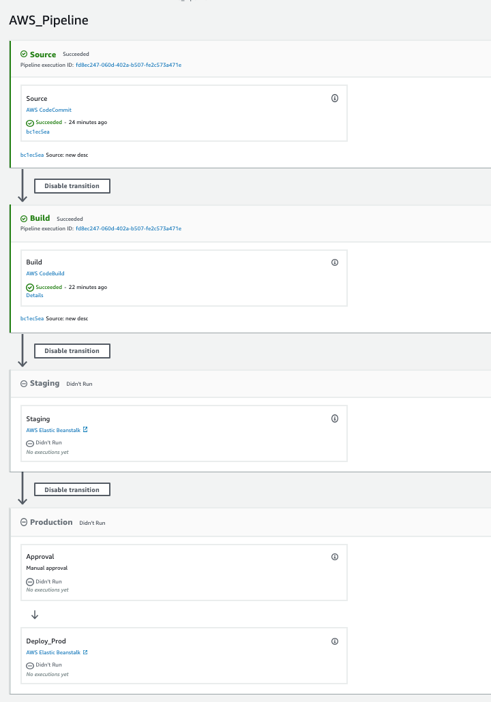
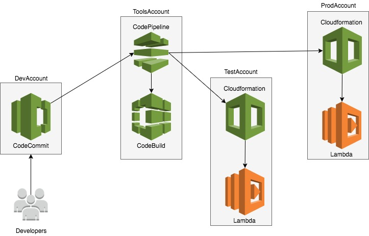
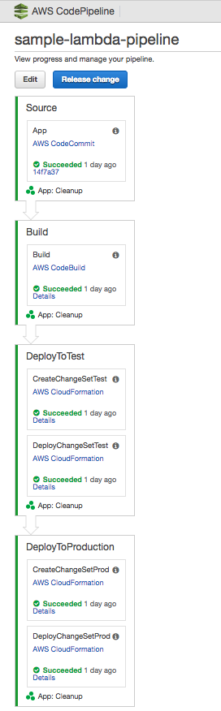

<div id="ajax-page" class="ajax-page-content">
    <div class="ajax-page-wrapper">
        <div class="ajax-page-nav">
            <div class="nav-item ajax-page-close-button">
                <a id="ajax-page-close-button" href="#"><i class="lnr lnr-cross"></i></a>
            </div>
        </div>

        <div class="ajax-page-title">
            <h1>AWS CI/CD</h1>
        </div>

        <div class="row">
            <div class="col-sm-8 col-md-8 portfolio-block">
                <div class="owl-carousel portfolio-page-carousel">
                    <div class="item">
                        
                    </div>
                    <div class="item">
                        
                    </div>
                    <div class="item">
                        
                    </div>
                    <div class="item">
                        
                    </div>
                </div>

                <script type="text/javascript">
                    jQuery(document).ready(function($){
                        $('.portfolio-page-carousel').imagesLoaded(function(){
                            $('.portfolio-page-carousel').owlCarousel({
                                smartSpeed:1200,
                                items: 1,
                                loop: true,
                                dots: true,
                                nav: true,
                                navText: false,
                                margin: 10,
                                autoHeight:true
                            });
                        });
                    });
                </script>
            </div>

            <div class="col-sm-4 col-md-4 portfolio-block">
                <!-- Project Description -->
                <div class="project-description">
                    <div class="block-title">
                        <h3>Description</h3>
                    </div>
                    <p class="text-justify">
                        The pipeline has 4 stages:
                        <br>
                        <br>
                        Step 1: Code is committed into CodeComit Git repo
                        <br>
                        <br>
                        - Then AWS Cloudwatch listens for changes to the repo
                        <br>
                        <br>

                        Step 2: Changes are then processed through AWS Code Build
                        <br>
                        <br>
                        - CodeBuild builds the project for the staging environment
                        <br>
                        <br>
                        - CodeBuild then runs tests and notifies throuh AWS SNS with emails for any build failures
                        <br>
                        <br>

                        Step 3: The code is then deployed to the Staging environment
                        <br>
                        <br>

                        Step 4: Manual Approval action as last action before code is deployed to the Production environment.
                        <br>
                        <br>
                        - After deployment a backup of the code is stored in S3 in it's respective enviornment folder.
                        <br>
                        <br>
                        *Alternatively this same pipeline has been used with AWS Lambda and Ec2's.*
                    </p>
                    <!-- /Project Description -->

                    <!-- Technology -->
                    <div class="tags-block">
                        <div class="block-title">
                            <h3>Technology</h3>
                        </div>
                        <ul class="tags">
                            <li><a>AWS Code Commit</a></li>
                            <li><a>AWS Code Build</a></li>
                            <li><a>AWS Code Pipeline</a></li>
                            <li><a>AWS SNS</a></li>
                            <li><a>AWS S3</a></li>
                        </ul>
                    </div>
                    <!-- /Technology -->
                </div>
                <!-- Project Description -->
            </div>
        </div>
    </div>
</div>
